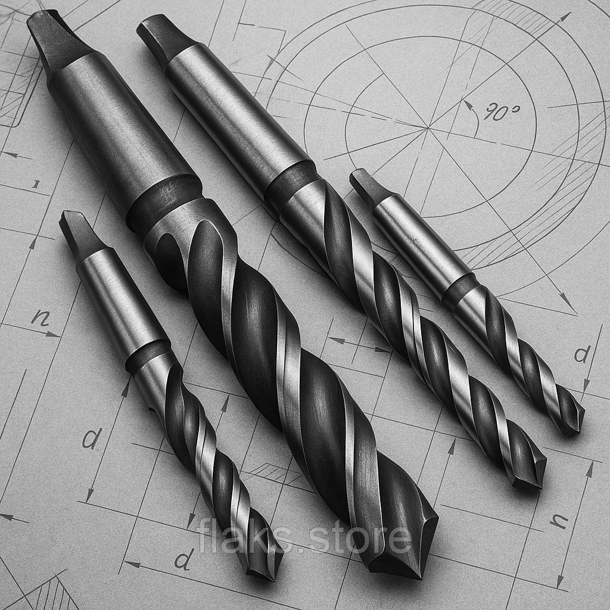

Свердла кхСверла кх
Свердло к/х ф 38.5 Р6М5 длин. Орша 400х220Сверло к/х ф 38.5 Р6М5 длин. Орша 400х220
ОписОписание
Свердло к/х ф 38.5 Р6М5 длин. Орша 400х220 — професійний металорізальний інструмент для свердління отворів у металі. Основні параметри: діаметр Ø 38.5 мм, розмір 400×220 мм та конічний хвостовик. Виготовлено з матеріалу швидкорізальна сталь Р6М5, що забезпечує стійкість різальної кромки при обробці конструкційних і легованих сталей, чавуну та кольорових металів. В наявності 5 шт. на складі у Харкові. Ціна 3000 грн без ПДВ. Опт і роздріб, відправлення по всій Україні. Замовлення від 2 000 грн.Сверло к/х ф 38.5 Р6М5 длин. Орша 400х220 — профессиональный металлорежущий инструмент для сверления отверстий в металле. Основные параметры: диаметр Ø 38.5 мм, размер 400×220 мм и конический хвостовик. Изготовлен из материала быстрорежущая сталь Р6М5, что обеспечивает стойкость режущей кромки при обработке конструкционных и легированных сталей, чугуна и цветных металлов. В наличии 5 шт. на складе в Харькове. Цена 3000 грн без НДС. Опт и розница, отправка по всей Украине. Заказ от 2 000 грн.
ХарактеристикиХарактеристики
| Тип інструментуТип инструмента | СвердлоСверло |
|---|---|
| КатегоріяКатегория | Свердла кхСверла кх |
| Діаметр ØДиаметр Ø | 38.5 мм38.5 мм |
| РозміриРазмеры | 400×220 мм400×220 мм |
| МатеріалМатериал | Р6М5Р6М5 |
| ХвостовикХвостовик | конічнийконический |
| СтанСостояние | новийновый |
| Код товаруКод товара | FLK-04740FLK-04740 |
| НаявністьНаличие | 5 шт.5 шт. |